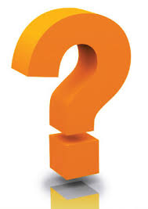
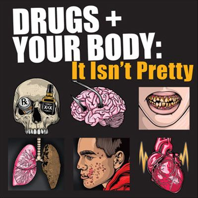
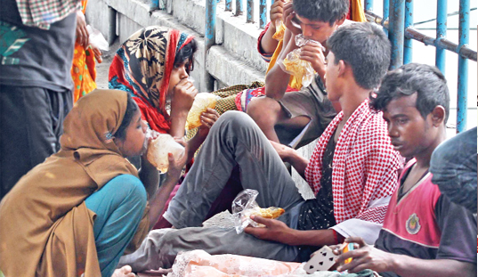

7 Million
Drug Addicts
Addiction is defined as a chronic, relapsing disorder characterized by compulsive drug seeking and use despite adverse consequences.It is considered a brain disorder, because it involves functional changes to brain circuits involved in reward, stress, and self-control, and those changes may last a long time after a person has stopped taking drugs.
When you are unable to stop using your drug of choice despite a desire to live without addiction, when you experience physical withdrawal symptoms when you attempt to stop getting high, when you crave your drug of choice and obsess about getting more – these are just a few characteristics of active drug addiction. Because it is a medical disorder, it is recommended that those who are diagnosed with the disease get immediate treatment that includes medical detox and psychotherapeutic treatment.
Some people who suffer from social anxiety, stress, and depression start using drugs to try to feel less anxious. Stress can play a major role in starting and continuing drug use as well as relapse (return to drug use) in patients recovering from addiction.
Some people feel pressure to improve their focus in school or at work or their abilities in sports. This can play a role in trying or continuing to use drugs, such as prescription stimulants or cocaine.
In this respect, teens are particularly at risk because peer pressure can be very strong. Teens are more likely than adults to act in risky or daring ways to impress their friends and show their independence from parents and social rules.

When they first use a drug, people may perceive what seem to be positive effects. They also may believe they can control their use. But drugs can quickly take over a person's life. Over time, if drug use continues, other pleasurable activities become less pleasurable, and the person has to take the drug just to feel “normal.” So, there has some risk factors and also has effects on those people who are willing to take drug.
Drug Addicts
Children
Man
Young People
Aside from overdose, there are many adverse medical effects of drug addiction.In addition to withdrawal symptoms, a person suffering from alcoholism, especially in the long term, may also experience:
Thousands of street children are being addicted to various drugs due to their availability in the capital, leading to an increase in street crimes. Experts said many street children between seven and sixteen take narcotic drugs such as yaba, phensidyl, heroin and cannabis, causing social concerns. Even they take adhesive solution, locally known as Dandi, as it is available and inexpensive. To get money for buying the drugs, they get involved in mugging and other crimes. They also take the path of begging, they added. But the exact number of drug addicts is still unknown as there is no comprehensive statistics for the social problem.
Director of Bangladesh Children Rights Forum Abdus Shahid Mahmood told the daily sun, “Many street children are employed by drug dealers to take narcotics to customers.” “The children are not usually searched by law enforcers. They are given Tk 50-100 a day [for the drug selling],” he added. Mahmood said, “Street children are engaged in various anti-social activities to get money for purchasing drugs. After growing up, they will engage in committing big crimes. “The situation is very alarming. A comprehensive campaign is needed to deal with drug problems.”
According to Bangladesh Bureau of Statistics (BBS) Child Labour Survey (CLS) 2013, there are around 39.65 million children in the country aged between 5 and 17 years. Among them, around 1.3 million children are engaged in hazardous jobs, 70 percent are involved in criminal activities due to poverty.

Bangladesh has at least 7 million drug addicts and 5 million of them are hooked on yaba pills, according to people familiar with the situation.

In a society that continually promotes alcohol and drug use at every level, the need to provide education on the dangers of alcohol and drug use and its effect on children has never been greater. NCADD believes education on this critical threat needs to
Stay Tuned With Reflection!